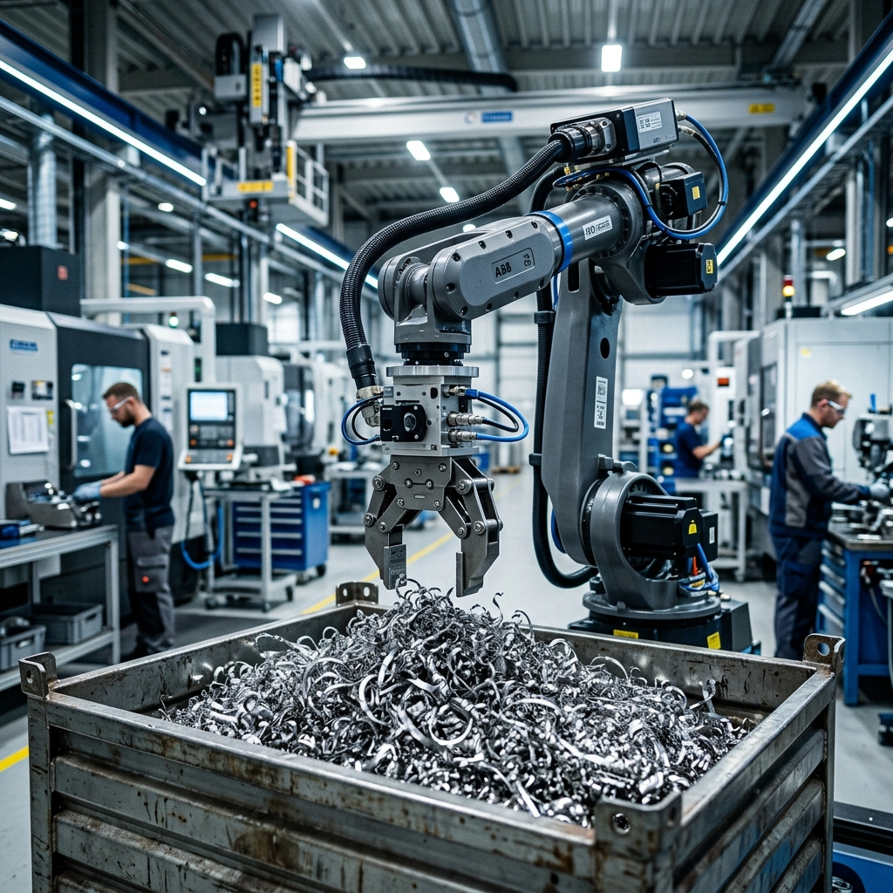

Innovation in advanced manufacturing often dies in isolation. Across the industrial corridors of North America and Europe, brilliant deep-tech startups develop algorithms they cannot test, while legacy manufacturers face production bottlenecks they lack the research capacity to solve. Meanwhile, the specialized by-products—often highly valuable materials—swept from one factory floor end up in a landfill because the innovator who desperately needs exactly that material is three cities away, entirely unaware it exists.
These are classic thin markets. The assets are highly valuable, but the search costs required to find the exact right partner, verify their capabilities, negotiate the intellectual property rights, and build trust are simply too high for the transactions to clear on their own.
But what if a regional government or industry association stepped in to sponsor a dedicated market ecosystem? The following scenario illustrates how a single instance of the MarketForge platform—powered by Cosolvent for matching and CommonContext for domain expertise—can untangle multiple overlapping thin markets across a regional manufacturing sector.
Note: The following is a fictional scenario designed to illustrate the operational mechanics of DeeperPoint’s thin market theory in an advanced manufacturing cluster.
Act I: The IP Dilemma and the Titanium Problem
Dr. Elias Thorne runs a robotics research lab at a technical university in Waterloo, Ontario. His team has just cracked a breakthrough in AI-driven robotic pathing: software that allows an industrial arm to adapt in real-time to micro-variations in dense aerospace metals. But to prove it works outside a lab, he needs a commercial testbed—specifically, a high-mix, low-volume titanium stamping line.
Five hundred kilometers away in Montreal, Marie-Laure Gagnon is the second-generation CEO of Gagnon Aerospace. She just won a massive contract to supply custom structural struts for a new commercial jet. However, the exact precision required means her scrap rate is hovering at 12%. She needs a dynamic robotic inspection and adjustment system, but building that AI capability in-house would bankrupt her. Furthermore, the stamping process generates three tons of highly specific titanium alloy shavings each month, coated in a proprietary cutting fluid. It costs her $4,000 a month just to have it safely hauled to an industrial waste facility.
Elsewhere in Hamilton, Arjun Desai, founder of Kaelen Materials, is trying to scale up his carbon-negative industrial composite. For his matrix to bind correctly, he requires a raw input of Class-2 titanium alloy shavings—but strictly without silicon-based cutting fluids. He’s been cold-calling aerospace suppliers for months with zero luck.
Act II: The Platform at Work
The Canadian Advanced Manufacturing Hub (the Sponsor) recently launched a centralized ecosystem to accelerate regional innovation, utilizing the DeeperPoint MarketForge architecture.
Elias, Marie-Laure, and Arjun all operate within this single, unified platform.
The Consortium Match
Marie-Laure logs into the platform to find a solution for her precision bottleneck. The Hub’s CommonContext isn’t a static database; it is a living schema continually trained on thousands of ingested industry documents. As she fills out her factory profile, the system extracts the descriptive metadata from her equipment lists and aligns it to this dynamic schema, defining her PLCs, robotic arm models, and alloy tolerances.
Simultaneously, Elias’s university profile has been processed through the same schema, structuring the capabilities of his AI algorithm.
The Cosolvent matching engine identifies a high-confidence semantic overlap between Elias’s algorithm vectors and Marie-Laure’s hardware constraints. Given the complexity of the match, the system doesn’t just hand over contact info. It initiates a structured collaboration workflow, prompting Elias and Marie-Laure to clarify specific integration hurdles. Using domain knowledge extracted by the CommonContext, it provides standard NDA templates and helps them assemble a “deal brief”—a detailed summary of their agreed IP terms, hardware commitments, and pilot goals.
Crucially, the platform does not attempt to execute binding commercial contracts. Once Elias and Marie-Laure finalize their deal brief, the system identifies regional attorneys specializing in university tech-transfer and industrial robotics, offering their contact information. The deal goes offline for final execution. Within three weeks, Elias’s team is running a pilot on Marie-Laure’s factory floor, and they soon secure a regional innovation grant as a verified consortium.
The Circular Economy Match
While the consortium was forming, Marie-Laure updated her facility’s waste stream outputs on her profile. The platform processed her input into its schema, identifying “aerospace-grade titanium scrap.”
Arjun, searching the platform for his composite inputs, is alerted to Marie-Laure’s profile by the Cosolvent engine. The initial match is strong based on the core material type and geographic viability, but it isn’t perfect—the system’s baseline schema doesn’t yet track microscopic details like specific cutting fluid types as a primary filtering vector.
However, because the CommonContext is continually ingesting new whitepapers and industrial protocols, it recognizes “chemical contamination” as a common friction point in sustainable materials sourcing. The platform explicitly prompts Arjun and Marie-Laure to qualify this technical detail before advancing the collaboration.
Through the platform’s structured messaging, Arjun asks about the fluid. Marie-Laure confirms it is lipid-based, not silicon. The technical parameters are verified. Better yet, this interaction creates a flywheel effect: the CommonContext observes the successful negotiation and slightly thickens its schema to weigh cutting fluid chemistry more heavily in future aerospace material matches.
With parameters verified, the platform guides them in compiling a comprehensive deal brief outlining monthly volumes, required purities, and pickup schedules. It does not finalize the transaction. Instead, the platform connects them with local logistics brokers and commercial lawyers familiar with provincial transport regulations for industrial by-products. They finalize their contract offline. Ultimately, Marie-Laure eliminates a $4,000 monthly disposal cost, and Arjun secures a stable supply chain that allows him to close his seed funding round.
Act III: The Physics of the Manufacturing Thin Market
The scenarios above illustrate how the structural frictions of thin markets—opacity, high discovery costs, and lack of trust—can paralyze an entire sector. Traditional job boards and commodity marketplaces fail here because the assets are too specific, and building a rigid database to anticipate every micro-category of supply and demand is impossible.
Instead, the Hub relies on the living architecture of the CommonContext. By steadily ingesting industry documents, parsing user interactions, and generating an ever-evolving metadata schema, the platform’s understanding of the domain grows richer over time. Combined with the Cosolvent engine to process highly complex semantic matching, the sponsor has thickened the market.
Because all participants share the same ecosystem, the platform isn’t just solving two problems—it’s establishing a baseline infrastructure capable of unlocking the rest of the sector’s hidden efficiencies:
1. Fractional Capacity for Highly Specialized Machinery: Marie-Laure’s facility houses a highly advanced, million-dollar ultrasonic non-destructive testing (NDT) rig. She only uses it three days a week. Through the platform, she can lease her idle machine time to smaller regional startups. The platform’s trust mechanisms ensure that the startups’ proprietary CAD files are protected and that only certified technicians operate the equipment.
2. Niche IP Licensing for Legacy Manufacturing: Following the success of the pilot at Gagnon Aerospace, Dr. Thorne’s team isolates a generalized version of their robotic pathing software. Rather than hiring a sales team, they list the software license on the platform. Other legacy metal-stampers—who do not compete directly with Marie-Laure—can discover, license, and download the software via the platform’s standardized, verified tech-transfer contracts.
3. Micro-Credentialed “Surgical” Talent Deployment: When Marie-Laure initially installed the robotic arms, she struggled for months to find an integration specialist certified on her specific, legacy programmable logic controllers (PLCs). Within the Hub ecosystem, independent engineers hold verified micro-credentials linked directly to their profiles. When a breakdown occurs, she can instantly deploy a verified specialist for a 72-hour contract, completely bypassing the weeks-long, expensive friction of traditional technical recruiting.
The scenarios presented in this article—including Gagnon Aerospace, Kaelen Materials, and the Canadian Advanced Manufacturing Hub—are fictional examples created to demonstrate DeeperPoint’s architectural capabilities. They are based on real-world industrial dynamics analyzed within the DeeperPoint thin market ecosystem.
To learn more about how platforms handle extreme specialization, read our Thin Market Overview or explore the architecture of MarketForge.